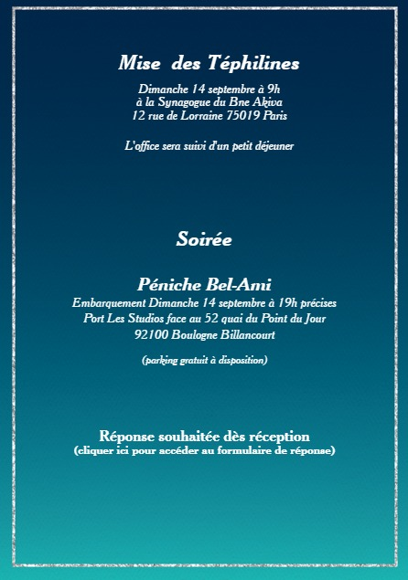

📖 Lecture de la Paracha – Shabbat
🗓️ Samedi 13 septembre 2025 à 9h30
📠Synagogue du Bne Akiva – 12 rue de Lorraine, 75019 Paris
L’office sera suivi d’un kiddouch convivial

Nous avons le plaisir de vous inviter à deux moments inoubliables
🗓️ Samedi 13 septembre 2025 à 9h30
📠Synagogue du Bne Akiva – 12 rue de Lorraine, 75019 Paris
L’office sera suivi d’un kiddouch convivial
🗓️ Dimanche 14 septembre 2025 à 9h
📠Synagogue du Bne Akiva – 12 rue de Lorraine, 75019 Paris
Après la mise des Téphilines, vous êtes chaleureusement invités à la fête 🎉
